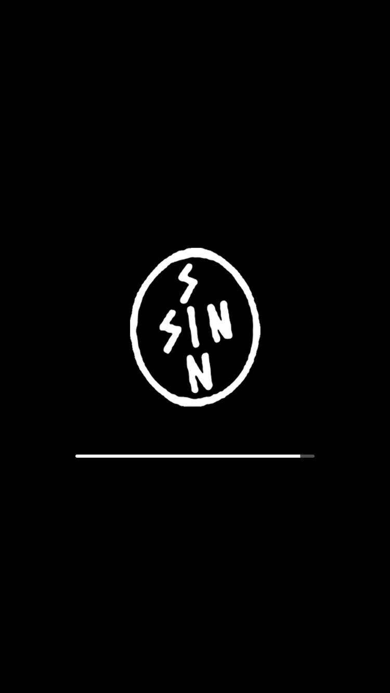
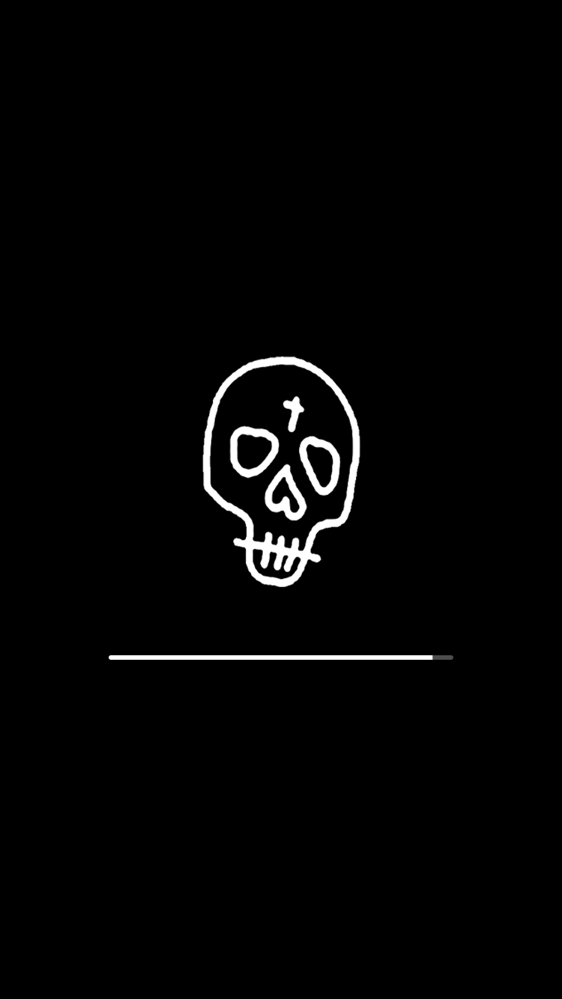
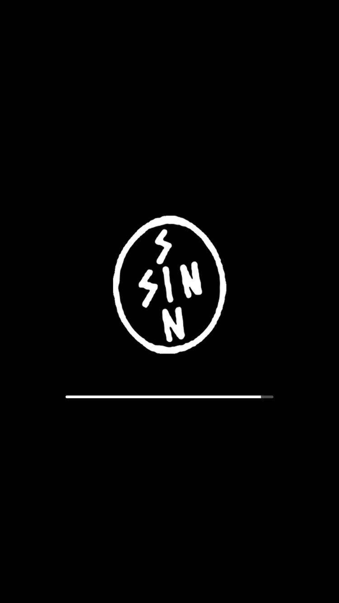
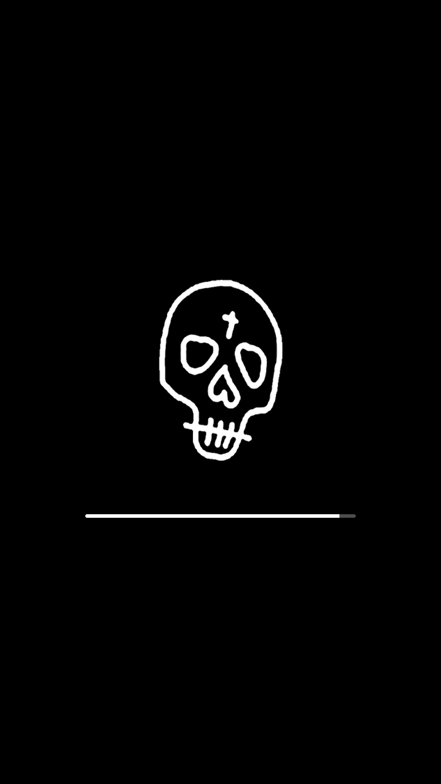

For Those Who Sin Respring Logo Pack
-
It's a pretty cool brand, and also highly underrated.
There are 7 options to choose from, previews down below.
It was requested by someone on Discord.
-
I don't know for sure right now if this works on SnowBoard, or any other theme application, so install at your own risk!
If someone wants to test them, go ahead! Just please report it to me on Twitter.
Depends on:
Preview
In this version
-
Just made it less resource intensive by lowering the size of the image, whilst keeping the quality.

 


